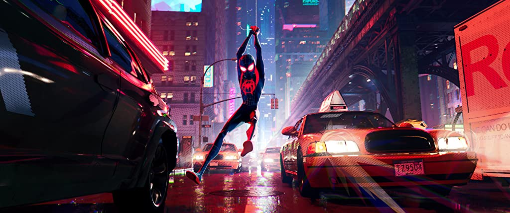
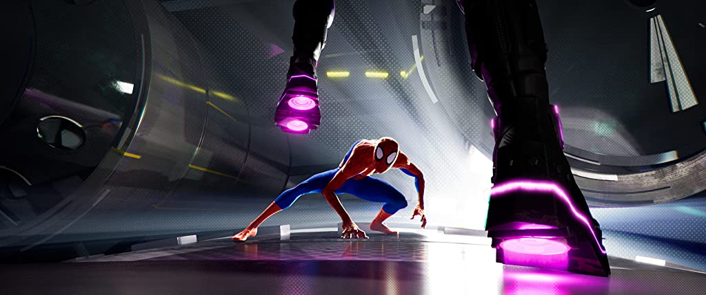
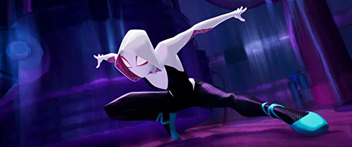

Bitten by a radioactive spider in the subway, Brooklyn teenager Miles Morales suddenly develops mysterious powers that transform him into the one and only Spider-Man. When he meets Peter Parker, he soon realizes that there are many others who share his special, high-flying talents. Miles must now use his newfound skills to battle the evil Kingpin, a hulking madman who can open portals to other universes and pull different versions of Spider-Man into our world.
Miles Morales is a teenager, hailing from Earth-1610, who becomes the second Spider-Man following the death of his predecessor, Peter Parker.
Peter Benjamin Parker is the superhero Spider-Man, hailing from dimension Earth-616, parallel to Miles Morales', considered to be the source dimension of the multiverse.
Gwendolyne "Gwen" Stacy is the teenage superheroine known as Spider-Woman. She is a friend of Peter Parker, the original Spider-Man; albeit being a far younger counterpart to him who became the Lizard.
